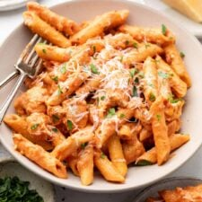

Home Page
Penne Alla Vodka

Description
Penne Alla Vodka is a classic pasta dish that is perfect for
those nights you need to throw something together fast!
Taking only 30 minutes to make, this creamy tomato
sauce will become your next staple dish! Feel free to adjust the
recipe below to your liking and have fun with it! Happy cooking.
Ingredients
- 8 ounces uncooked penne pasta
- 1 tablespoon olive oil
- 2 tablespoons butter
- 1/2 small onion (finely chopped)
- 1 clove garlic (minced)
- 1/4 cup vodka (whatver you have on hand)
- 1/4 cup tomato paste
- 3/4 cup heavy(or whipping) cream
- Salt & Pepper to taste
- (Optional) Fresh Basil to top
- Grated parmesan cheese
Steps
- Boil a generously salted pot of water for the
penne and cook it al dente according to package
directions.
- Meanwhile, add the oil and butter to a skillet over
medium heat. Saute the onion for about 5 minutes (or until
softened).
- Add the garlic and cook for an additional 30 seconds.
- Add the vodka and let the sauce bubble for about 30 seconds
- Stir in the tomato paste until ingredients form a smooth mixture.
- Stir in the heavy cream and reduce the heat to medium-low. Let the
sauce warm through until thickened. This sauce tends to thicken up within
a couple minutes so I recommend to keep watch of it and keep heating it
until your desired thickness level.
- Season sauce with your desired amount of salt & pepper. If you
are using fresh basil, stir that in now. At this point, if your sauce
is too thick you can splash some of the leftover past water in to thin
it out. Add your cooked noodles to the sauce & stir until fully mixed
together. Serve pasta with the grated parmesean cheese (if desired).